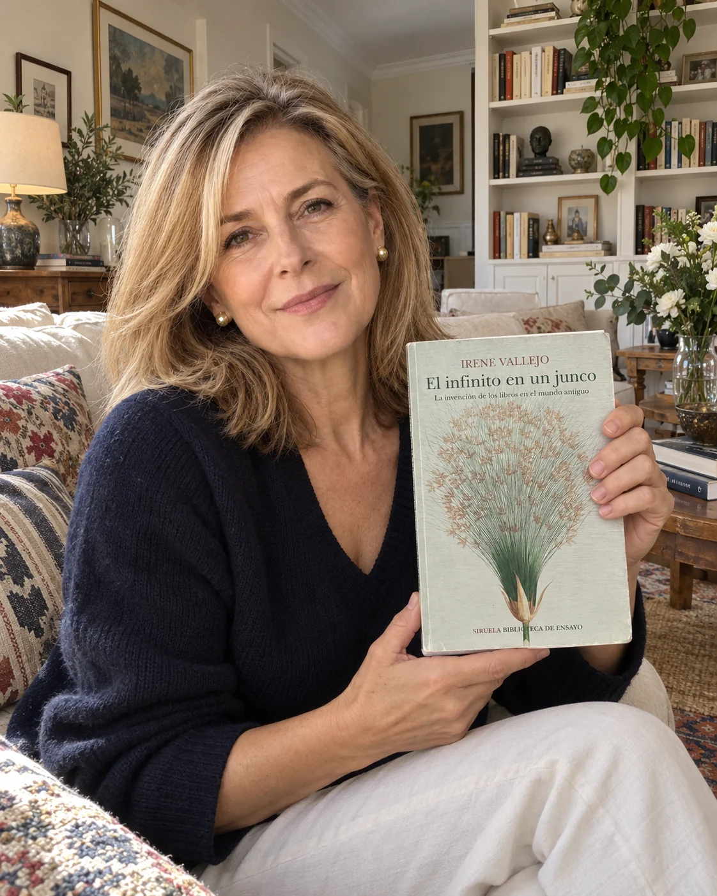
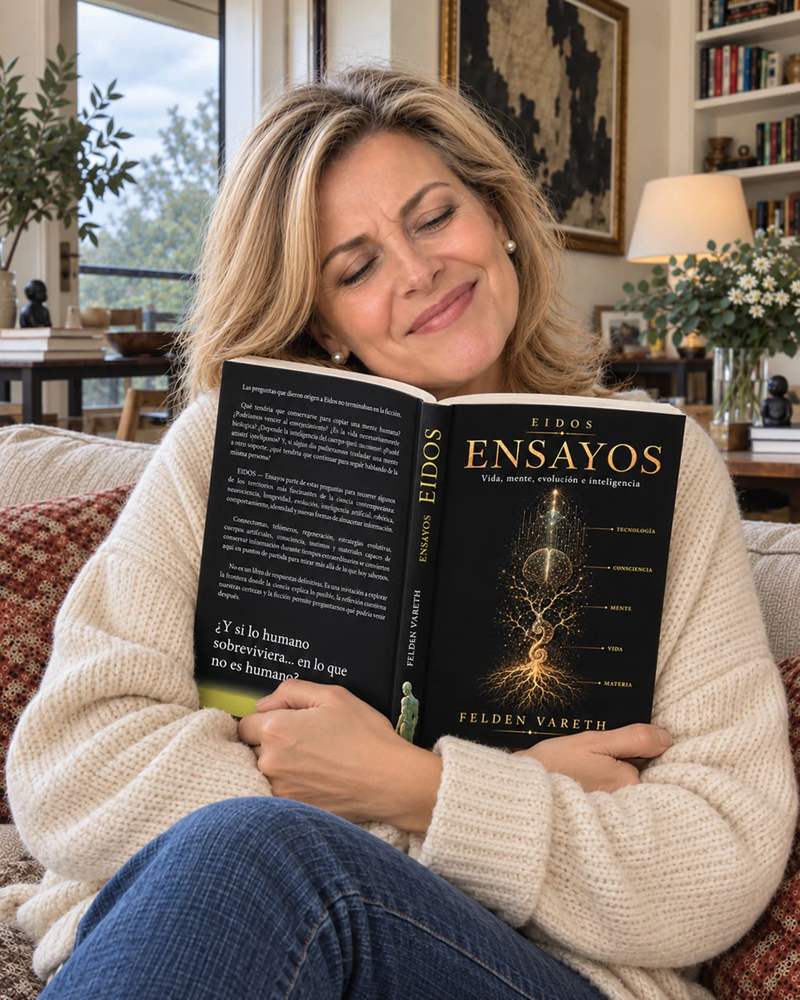
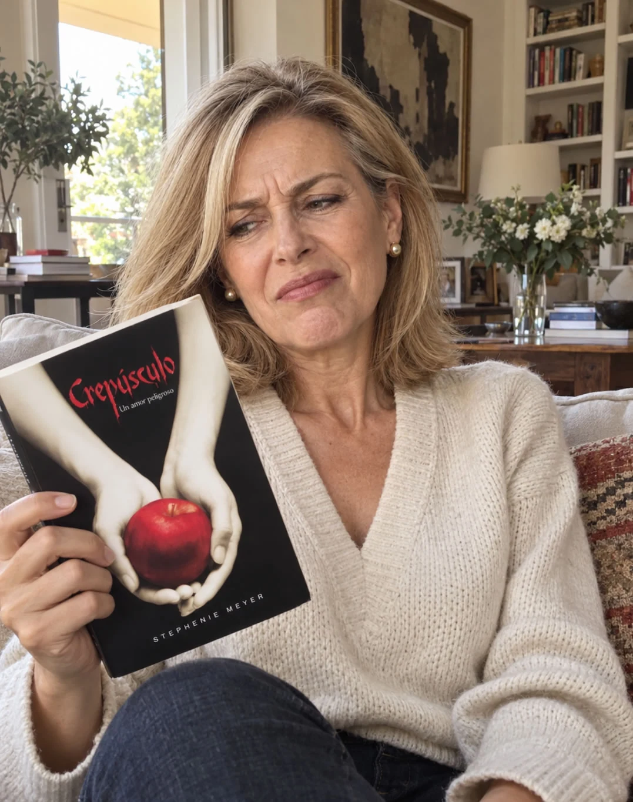
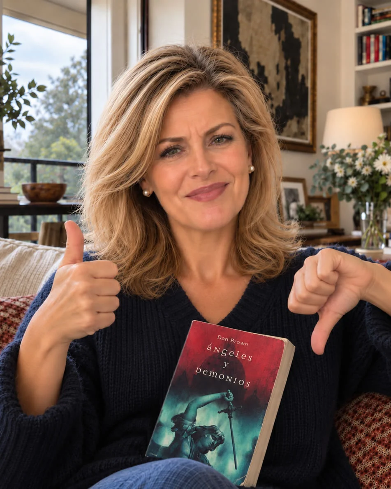
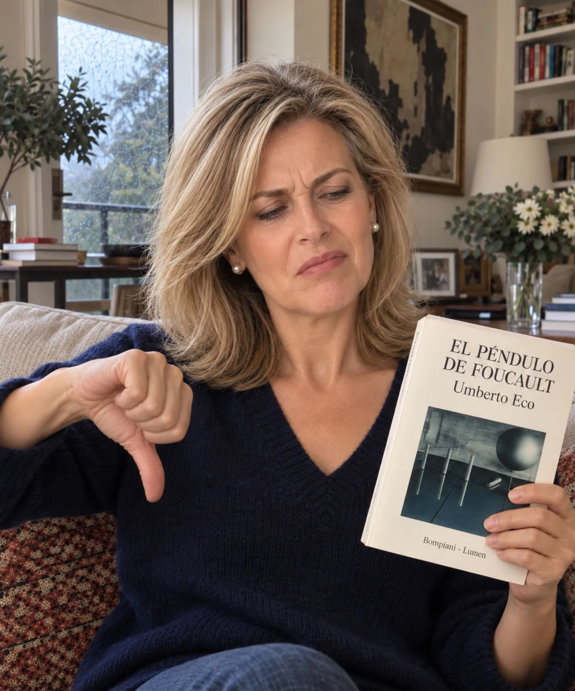

Reseña publicadaEnsayo · Historia del libro
El infinito en un junco
9 de octubre de 2026
Una historia de los libros que merece leerse sin prisas.
Un rincón de Nora Montalba
Leo por placer, por curiosidad y, a veces, porque alguien me ha recomendado un libro que no habría elegido por mi cuenta. Aquí voy dejando mis impresiones sobre esas lecturas.
Son opiniones personales, con mis gustos y mis manías. Habrá libros que me entusiasmen y otros que no consiga disfrutar. No pretendo hacer crítica literaria profesional: simplemente quiero contar lo que me ha parecido cada uno, con libertad y sinceridad. Y una cosa sobre las notas: aquí no veréis ningún 10. Para mí, esa puntuación está reservada a un único libro: Don Quijote de la Mancha.
Explorar las reseñasMi biblioteca de lecturas
7 libros
No hay reseñas con esos filtros. Prueba otra combinación.

Reseña publicadaEnsayo · Historia del libro
9 de octubre de 2026
Una historia de los libros que merece leerse sin prisas.

Reseña publicadaEnsayo · Divulgación
21 de octubre de 2026
Una lectura sobre vida, evolución e inteligencia que me ha sorprendido para bien.

Reseña publicadaNovela · Fantasía romántica
12 de octubre de 2026
No fui capaz de terminarla y, por eso, no la puntúo.

Reseña publicadaNovela · Thriller
27 de octubre de 2026
Un thriller de ritmo vertiginoso que funciona como entretenimiento.

Reseña publicadaNovela
18 de octubre de 2026
Terminarla fue casi una cuestión de orgullo: una lectura lenta y agotadora.
 Reseña publicada
Reseña publicada
Novela
25 de octubre de 2026
Un imperio textil y una crisis como punto de partida. La novela no ha respondido a mis expectativas.
Novela
7 de octubre de 2026
La pérdida, la memoria y los libros en una historia cercana y emotiva.
Las puntuaciones reflejan mis impresiones personales. En algunas reseñas distingo entre la valoración general y aspectos concretos, como la calidad literaria o el entretenimiento. Para filtrar y ordenar los libros se utiliza siempre la valoración general; cuando solo hay una nota, esa es la que cuenta. Por defecto, las reseñas aparecen de mayor a menor puntuación y, en caso de empate, de la más reciente a la más antigua. Los libros que no he terminado figuran como «No puntuable» y se muestran después de los que tienen una nota numérica, incluso del 1/10.